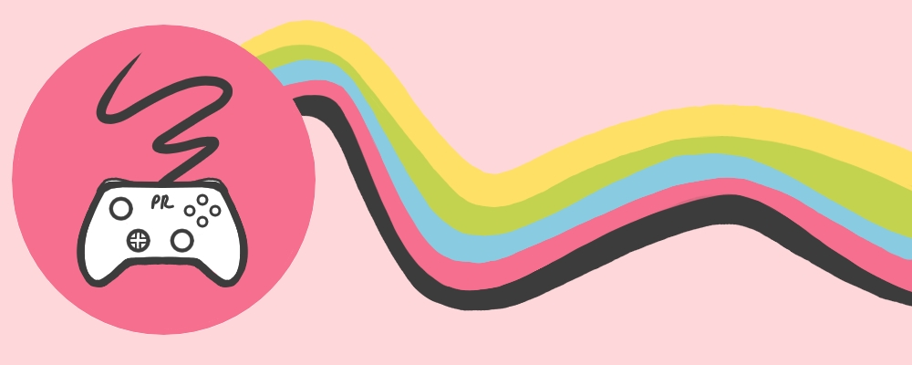

About Pixel Renaissance
Pixel Renaissance was born out of three passions of mine: art, video games, and sociocultural analysis. I have always wanted a place where I could expound on my thoughts regarding the video games I played, especially when it came to the larger themes presented in them as well as how the art style influenced the overall playing experience.
We also have a store page if you are interested in supporting our mission of providing thoughtful commentary and challenging preexisting notions about the video games you love.
We are happy to have you here and hope that you will find a greater artistic and sociocultural appreciation for the media you choose to enjoy.
